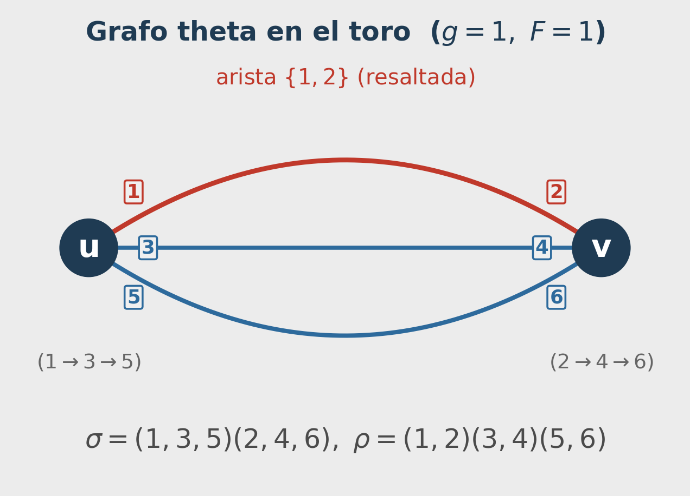
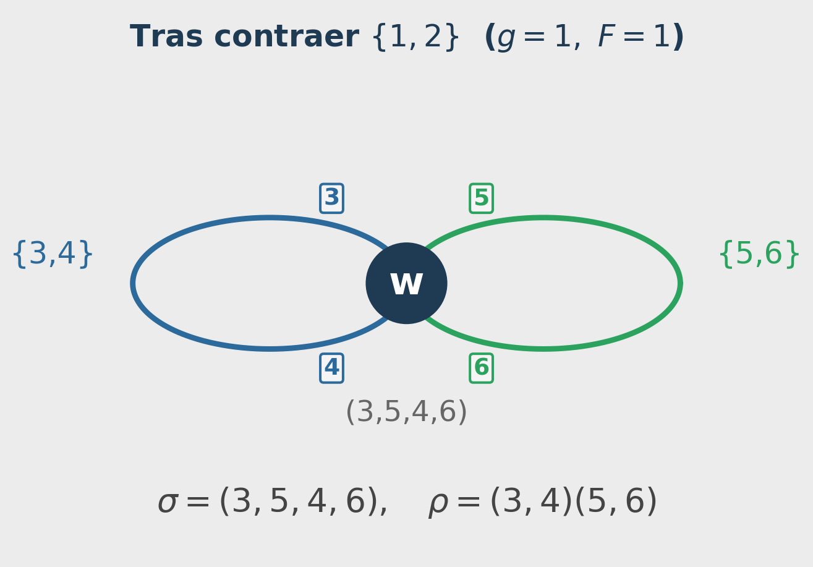
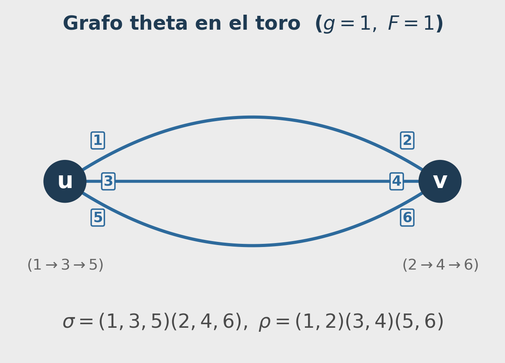
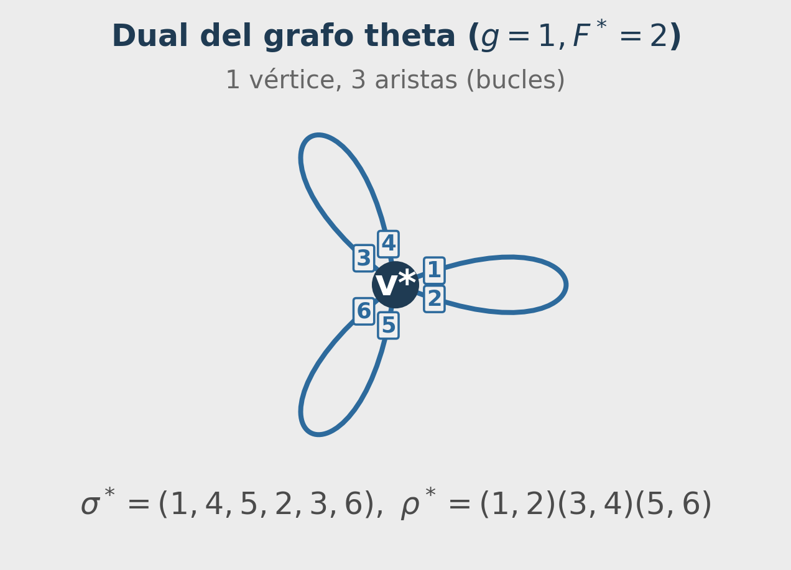
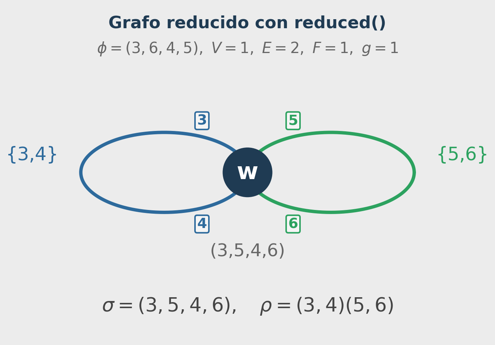

6. Operaciones sobre Ribbon Graphs
Contracción, dualidad, reducción y homología en Sage
En los capítulos anteriores aprendimos a construir ribbon graphs y calcular invariantes topológicos. Este capítulo se enfoca en las operaciones principales sobre ribbon graphs que podemos verificar en Sage: contracción, dualidad y cálculo de base de homología.
Contracción de Aristas
La contracción de una arista fusiona sus dos extremos en un único vértice, preservando el orden cíclico de los darts restantes.
Dado un ribbon graph \(G = (\sigma, \rho)\) y una arista no-loop \(e = \{d, \rho(d)\}\) cuyos extremos son los vértices \(u\) y \(v\) (ciclos de \(\sigma\)), la contracción \(G/e\) tiene:
- Darts: todos excepto \(d\) y \(\rho(d)\)
- Nueva \(\sigma\): los ciclos de \(u\) y de \(v\) se fusionan, intercalando el orden cíclico de \(v\) donde estaba \(\rho(d)\) dentro del ciclo de \(u\), y eliminando \(d\) y \(\rho(d)\)
- Nueva \(\rho\): igual a \(\rho\) restringida a los darts restantes
Efecto topológico: Contraer una arista no-loop preserva el número de caras y la característica de Euler: \[V(G/e) = V-1, \quad E(G/e) = E-1, \quad F(G/e) = F, \quad \chi(G/e) = \chi(G)\]
En particular, la contracción de una arista no-loop preserva el género.
Ejemplo: Tomamos el grafo theta en el toro y contraemos la arista \(\{1,2\}\):


El resultado es un ribbon graph con un solo vértice y dos loops que todavía representa un toro (género 1). La contracción no cambia la superficie subyacente cuando la arista no es un loop.
Dualidad
La dual de un ribbon graph intercambia los roles de los vértices y las caras, preservando las aristas.
Dado \(G = (\sigma, \rho)\) con permutación de caras \(\varphi = \rho\sigma\), la dual es: \[G^* = (\varphi,\; \rho)\]
Los vértices de \(G^*\) son las caras de \(G\), las aristas son las mismas, y las caras de \(G^*\) son los vértices de \(G\). En fórmulas: \[V^* = F, \quad E^* = E, \quad F^* = V, \quad g^* = g\]
Ejemplo: Consideramos el grafo theta en el toro (\(\sigma=(1,3,5)(2,4,6)\), \(\rho=(1,2)(3,4)(5,6)\)). Este grafo tiene \(V=2\) vértices, \(E=3\) aristas y \(F=1\) cara.
¿Por qué el dual tiene 3 lazos? Al aplicar la dualidad (\(V^*=F, E^*=E\)), obtenemos un grafo \(G^*\) con 1 vértice (porque \(F=1\)) y 3 aristas (porque \(E=3\)). La única forma de disponer 3 aristas en un grafo con un solo vértice es que todas ellas sean lazos (bucles) que empiezan y terminan en ese mismo vértice.


El toro del ejemplo tiene \(V=2\), \(E=3\), \(F=1\); su dual tiene \(V^*=1\), \(E^*=3\), \(F^*=2\) y el mismo género 1.
Base de Homología
La base de homología de la superficie subyacente a un ribbon graph se puede calcular directamente con Sage. Para una superficie orientable de género \(g\) con \(b\) componentes de frontera, el rango del primer grupo de homología es: \[\mathrm{rank}(H_1(S,\mathbb{Z})) = 2g + b - 1\]
El toro del ejemplo tiene género 1 y \(b=1\) componente de frontera (superficie cerrada), por lo que el rango esperado es \(2(1) + 1 - 1 = 2\):
Los dos ciclos de la base corresponden a los dos “agujeros” fundamentales del toro: el camino a lo largo del tubo y el camino alrededor del tubo.
Reducción (núcleo de Betti)
El método reduced() contrae aristas de un árbol generador y devuelve un ribbon graph topológicamente equivalente en el siguiente sentido preciso (documentación de Sage):
- La permutación \(\sigma\) del resultado tiene exactamente un ciclo no-singleton (un único vértice no aislado).
- La permutación \(\rho\) es producto de \(\beta_1\) transposiciones disjuntas, donde \(\beta_1\) es el primer número de Betti del grafo subyacente.
Para un grafo conexo, \(\beta_1 = E - V + 1\). Por tanto, tras reduced() no se conserva el número original de aristas: se conserva la información topológica esencial (género y fronteras), y las aristas pasan a ser las del bouquet mínimo.
Si usas cycle_tuples(singletons=True) sobre G_red.sigma() o G_red.rho(), Sage incluye ciclos fijos (1-ciclos) en el dominio de la permutación. Eso puede dar valores como V=3, E=4 aunque el grafo reducido real tenga V=1, E=2.
Para contar vértices/aristas del ribbon graph reducido, en este contexto usa cycle_tuples() sin singletons=True.
En este ejemplo, G_red.sigma() = (3,5,4,6) y G_red.rho() = (3,4)(5,6): hay 1 ciclo no-singleton en \(\sigma\) y 2 transposiciones en \(\rho\), es decir, un bouquet con 1 vértice y 2 lazos. El género y el número de fronteras se preservan.

Estas operaciones —contracción, dualidad, reducción y cálculo de homología— son propiedades útiles documentadas en el manual de Sage para la clase RibbonGraph. En la siguiente sección estudiaremos el polinomio de Bollobás-Riordan como un invariante topológico-combinatorio implementable en SageMath.